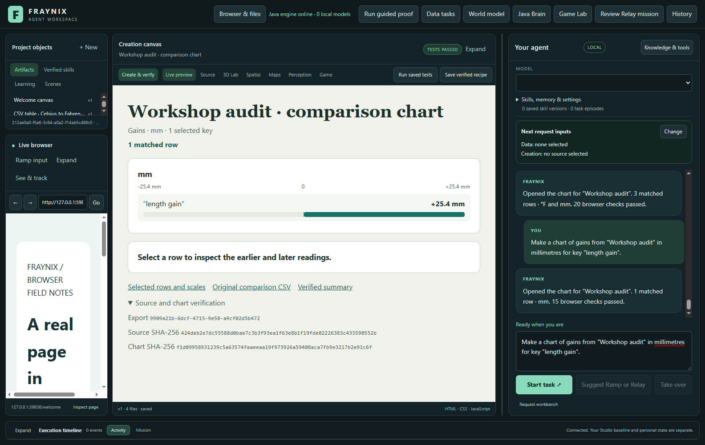
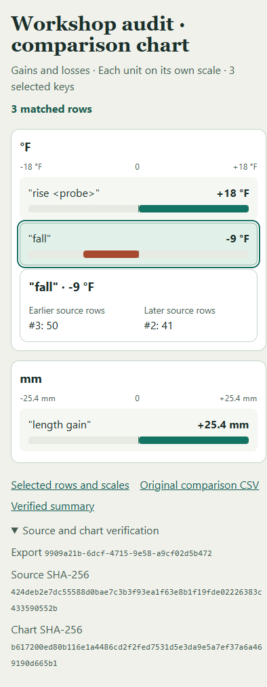

Explore exact changes in a named comparison
Name a verified comparison, then ask Chat to plot gains, losses or exact rows. Fraynix gives each unit its own scale and lets you inspect both original readings.

Chat charts a single named row in millimetres in the desktop

The offline chart places original readings beside the selected bar
System files
Open source